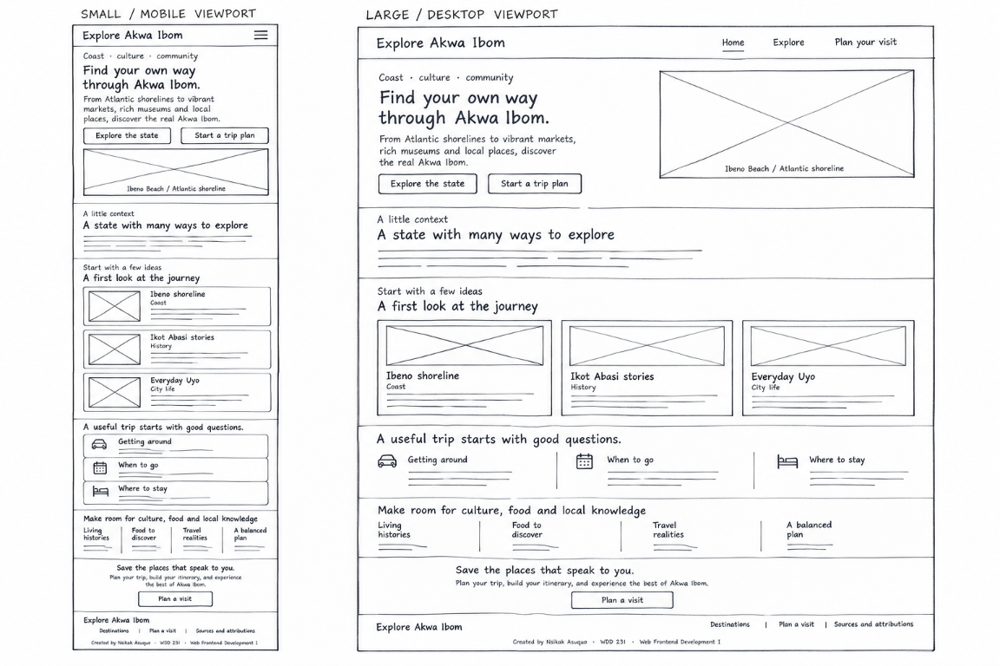

WDD 231 · Project planning
Explore Akwa Ibom
A visitor guide to the coast, culture, history, and city life of Akwa Ibom State, Nigeria.
01 · Identity
Site name
Explore Akwa Ibom
The name pairs a clear invitation with the place the project is about. It is easy to remember, helps visitors immediately understand the subject, and works consistently across the home, destination, and trip-planning pages.
Representative domain: exploreakwaibom.com (availability not checked)
02 · Scope
Site purpose
Explore Akwa Ibom is an independent student-created visitor guide that introduces destinations and experiences across Akwa Ibom State. It helps prospective visitors discover coastal, cultural, historical, and city attractions; browse and filter destination information; save places to a personal shortlist; and consider a flexible sample itinerary. The site also provides visitor context, source attributions, and a form for organizing travel interests. It is an informational project, not a booking service or official tourism publication.
03 · Audience needs
Visitor scenarios
- What coastal, historical, and cultural places can I explore in Akwa Ibom?
- Which destinations are in or near Uyo, and how can I narrow the list by area or type?
- How can I keep track of places I might visit and sketch out a few days in the state?
- Where can I check the sources behind the destination descriptions before I travel?
04 · Visual identity
Color scheme
The existing project palette takes its cues from greenery, the coast, and warm sand. The site plan uses this same palette.
- Deep green · #173E35
Header and footer backgrounds, dark emphasis, and high-contrast text on light surfaces. - Forest green · #254F40
Links, buttons, and secondary visual emphasis. - Warm sand · #F4EFE4
Page-heading background and soft section accents. - Terracotta · #A95F43
Small section labels and accent details. - Forest ink · #20342D
Body copy and primary text on light backgrounds. - Soft cream · #FBF9F4
Main page background. - Muted green-gray · #5E6D63
Supporting text and secondary information. - Pale green · #E1EAE2
Secondary text on dark green backgrounds. - Soft divider · #D9DED4
Section dividers and subtle card borders. - White · #FFFFFF
Card surfaces and contrasting text.
05 · Readability
Typography
Headings · Georgia, serif
Discover the coast and culture.
Body copy, navigation, and controls · DM Sans, sans-serif
Explore destinations, learn about local context, and save places to consider for your visit. The sans-serif body face supports comfortable reading across screen sizes.
DM Sans is specified first, with Segoe UI and the generic sans-serif family as local fallbacks. Georgia is specified first for headings, with Times New Roman and the generic serif family as fallbacks.
06 · Structure
Home page wireframes
This hand-drawn home page sketch shows the responsive layout: the small/mobile view is on the left, and the large/desktop view is on the right.
